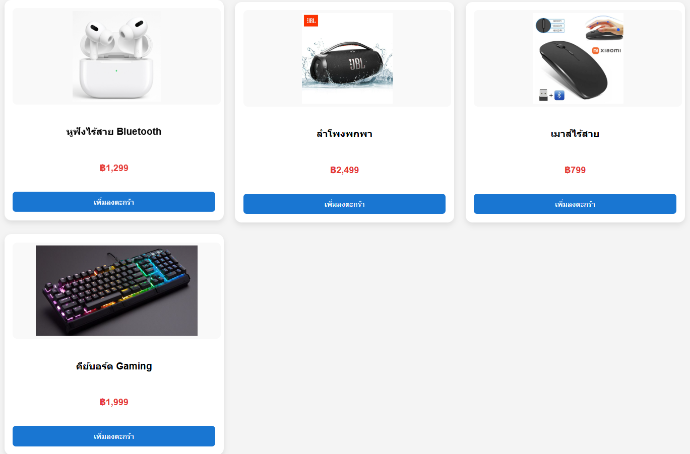

Ex.6 : CSS : intermediate : สร้างการ์ดสินค้าแบบ Responsive
คุณได้รับมอบหมายให้สร้างคอมโพเนนต์การ์ดสินค้าที่สามารถปรับขนาดได้ตามหน้าจอ
โดยการ์ดแต่ละใบจะต้องแสดงรูปภาพสินค้า ชื่อสินค้า ราคา และปุ่ม
'เพิ่มลงตะกร้า' คอมโพเนนต์นี้ควรจะดูดีบนหน้าจอทุกขนาด
ตั้งแต่เดสก์ท็อปไปจนถึงมือถือ
สิ่งที่โจทย์ต้องการ:
-
จัดเรียงการ์ดสินค้าให้อยู่ในรูปแบบ Grid หรือ Flexbox
ที่สามารถปรับจำนวนคอลัมน์ได้ตามขนาดหน้าจอ (เช่น 3 คอลัมน์บนเดสก์ท็อป,
2 คอลัมน์บนแท็บเล็ต, 1 คอลัมน์บนมือถือ)
-
แต่ละการ์ดต้องมี padding และ margin
ที่เหมาะสมเพื่อให้มีระยะห่างที่สวยงาม
- รูปภาพสินค้าต้องปรับขนาดได้ตามการ์ดและไม่บิดเบี้ยว
-
ปุ่ม 'เพิ่มลงตะกร้า' ควรมีสไตล์ที่น่าสนใจ เช่น เปลี่ยนสีเมื่อโฮเวอร์
และมีการเปลี่ยนผ่าน (transition) ที่นุ่มนวล
-
ใช้ Media Queries เพื่อจัดการการแสดงผลบนหน้าจอขนาดต่างๆ ให้เหมาะสม

https://github.com/6740011062/ApisraWebPortfolio.git